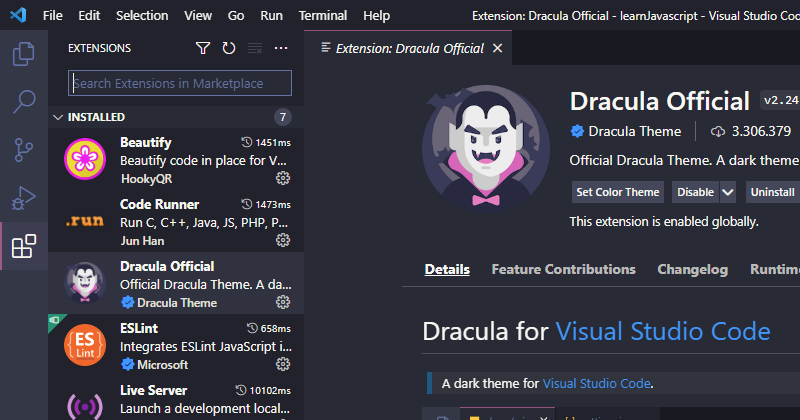

Introdução a programação
Nessa segunda aula teremos uma breve introdução antes de começar a entender a como funciona o javascript, vamos passar a entender um pouco mais sobre o vscode e como utilizar melhor essa ferramenta e também teremos algumas dicas de extensões adicionais que irão facilitar ainda mais a nossa vida como programador. Percorreremos também sobre alguns assuntos tais como sentenças de código, comentários, blocos de código, dados e por fim valores, esse será o seu primeiro módulo do curso, aproveite!
Visual Studio Code
Agora que você têm essa bela ferramenta instalada no seu computador, podemos configurar algumas coisinhas e compreender um pouco mais do seu funcionamento, ao abrir temos a tela inicial do programa, em "File" no canto superior esquerdo do software, temos:
- New File - Criar um novo arquivo
- New Window - Abrir uma nova janela independente
- Open File/Folder - Abrir um arquivo ou pasta
- Open Workspace from file - Abrir uma pasta contendo varios arquivos
- Open Recent - Abrir um projeto recente
Para instalar uma extensão basta você acessar a aba Extensions que fica no canto esquerdo ou pressionar (ctrl + Shift + X) e na aba que abrir, na barra de pesquisa procure por "dracula official" clique em cima dele e faça a sua instalação, para aplicar basta ir de novo em Color Themes e aplicar o tema Dracula, agora que você aprendeu a instalar uma extensão, podemos instalar uma última chamada "Live Server", antigamente, sempre que tinhamos que fazer uma alteração no código éramos obrigados a pressionar F5 na página para carregar as mudanças mas hoje em dia, graças a essa extensão a página é atualizada automaticamente em tempo real, sempre que fazemos alguma alteração no código, vamos usar muito essa extensão nos nossos projetos que irão envolver HTML e CSS. 
Sentenças & Blocos de Código
Cada linguagem de programação têm sua estruturação, uma forma de ser organizado, javascript é uma linguagem sensível nessa questão isso porque não existe um padrão fixo de estruturação de um código, por exemplo, em C++ temos uma estrutura parecida como esta, ela pode ser alterada, mas segue o padrão abaixo:
onde primeiro, na linha um temos a definição de algumas bibliotecas que utilizamos no código, na quinta linha já temos a abertura da "main"
que é onde inserimos a maior parte do código que forma o nosso programa, perceba que o nosso "Olá Mundo", assim como o retorno está inserido
dentro das chaves {}
Javascript é organizado em sentenças e blocos de código, os blocos de código são agrupamentos de linhas de códigos ou sentenças como foi mostrado
anteriormente na "main", temos um bloco de código, onde imprimos na tela um 'Olá Mundo!' que em seguida armazena um retorno e finaliza o programa.
Se você já vem de outra linguagem como de C/C++, PHP, Java... Com certeza você já está acostumado a usar ponto e vírgula no final de cada sintaxe
do seu código, bem, no Javascript assim como no Phyton isso é opcional, você é quem decide se quer usar com ou sem ponto e vírgula, particularmente
não faço o uso, tento sempre deixar os meus códigos o mais simples possível, mas isso não é uma regra, muitos profissionais mantém o uso pelo
costume, pois eles já vêm de outras linguagens em que o uso é obrigatório e quando migram para Javascript preferem manter assim.
Não se apegue muito aos detalhes, essa é a nossa segunda aula, mantenha o foco apenas no que está sendo ensinado, tudo pode parecer bem nebuloso por enquanto
mas no decorrer do curso tudo ficará muito bem claro, portanto é importante que você mantenha a atenção, leia e releia se possível, só assim você deve aprender.
Comentários
Talvez você não tenha notado e isso é normal, mas dentro das linhas de código acima foi inserido alguns comentários para facilitar o seu entendimento sobre sentenças
e blocos de códigos, assim como em toda linguagem, não seria diferente aqui, os comentários são parte essencial de um programa, sem eles com certeza tudo seria uma
bagunça, imagine você escrever um programa hoje e passado um mês você já nem está mais familiarizado com o seu próprio código, uma tragédia.
É por esse motivo que seu uso é importante, comentários em javascript podem ser feitos utilizando "//" barra + barra ou "/**/" barra, asterísco, asterísco e barra a diferença entre esses dois é que o primeiro serve
para comentar apenas uma linha e o último serve para comentar mais de uma linha como no exemplo abaixo:
Você pode comentar um trecho de código e o trecho comentado não terá mais efeito no programa, porém tudo que estiver fora do comentário terá efeito, no exemplo acima
uma variável foi criada armazenando o nome "Paulo", logo abaixo, houve uma tentativa de alterar o nome para "Anderson", mas isso não vai funcionar pois essa linha está
comentada e não altera a variável criada, o que será imprimido no final é o nome "Paulo" e não "Anderson".
Uma última observação sobre comentários, existe uma regra a ser seguida, você só deve fazer comentários sucintos e necessários, nenhum programador precisa comentar a
criação de uma variável por exemplo, "Essa é uma variável que armazena uma string", "Esse é um bloco de código que faz algo óbvio", comentários devem ser usados somente
quando necessário e precisam ser objetivos, nada de criar longos textos para explicar algo quando se pode resumir em uma breve linha. Existe uma norma a seguir quando tratamos
de comentários, você pode pesquisar um pouco mais a fundo sobre cada assunto aqui citado, neste curso disponibilizamos o básico.
- Introdução a programação
- Visual Studio Code
- Sentenças & Blocos de Código
- Comentários